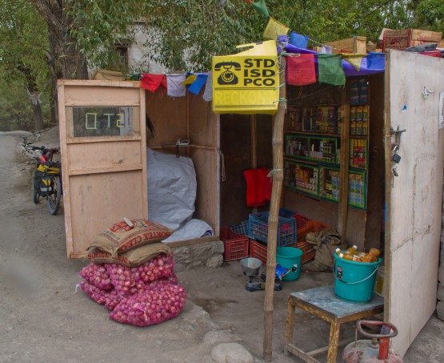

Торговаться или нет?
Когда едешь в страну первый раз, хочется узнать про нее максимум и желательно из уст тех, кто сам побывал. Вот и у нас оказался знакомый знакомых, который бывал в Индии аж 14 (четырнадцать) раз, правда, на машине. Мы внимательнейшим образом выслушали все его советы и. . . они нам не пригодились. Самый главный совет - это "торговаться до последнего вздоха", мол, цены для белых обезьян заряжены в разы и их можно снизить до нормального уровня.
Допускаю, что у нас в команде не было специалиста по торговле, но простые варианты как: мы возьмем больше, но дешевле, или плавный отход в надежде, что тебя остановят, не проходили ни разу. Мало того выяснилось, что на упаковке всех продуктов указана максимальная розничная цена и именно по этой цене всё продается. Даже если называют другую цену, достаточно просто перевернуть товар, ткнуть пальцем в цену и ее обязательно снизят до рекомендованной, мол, ой перепутал. Естественно, что все сказанное относится к товарам в упаковке. Пару раз получилось сторговаться по цене на отель и, пожалуй, все.
По правде сказать, особой необходимости торговаться до потери сознательности и не было. Судите сами: пачка печенья - 10 рупий (7 рублей), чай (в кафе с официантом) - 5 рупий (3 рубля) и т. д.
Относительно большие деньги мы отдали за такси, которое подкидывало нас на перевал в сторону Каргила (1500 рупий за всех), но других вариантов там не было, а терять лишний день очень не хотелось.
Подозреваю, что в больших городах дела обстоят несколько иначе, но мы старались провести в городах минимум времени и понять этого я не успел.
Мой вывод такой: смысла торговаться за продукты практически нет, такси и ночлег - надо пробовать.
Сим-карты, телефоны, интернет, электричество
Настоящим открытием для нас стало то, что сим-карту в Сринагаре не купить, мало того, если я правильно понял, ее невозможно купить во всем Кашмире. Удивлены? Мы тоже удивились и продолжали спрашивать у разных людей, но ответ был одинаков: для местных нужно оформить три разрешения, а иностранцам симки не продают. Наши мегафоновские и мтесовские показывали полное отсутствие сети (!), даже в городах.
Для нас это стало неожиданностью, в Интернете кроме такой инструкции на эту тему ничего не попадалось:
Инструкция по покупке сим-карты (стырено в Инете, откуда забыл):
Для покупки сим-карты индийского оператора мобильной связи вам понадобится:
А) ксерокопия первой страницы паспорта;
Б) ксерокопия страницы паспорта, на которой проставлена индийская виза;
В) фотография;
Д) ксерокопия документа удостоверяющего личность владельца гест-хауса, в котором вы остановились (этот документ стали требовать только с 1 марта 2010 года; возможно, в Манали вы сможете обойтись при покупке сим-карты без него).
Стоимость сим-карты не превышает 100 рупий (2 доллара). Плюс деньги, которые вы положите на баланс.
В Манали много интернет-кафе. Пользование интернетом стоит 40 рупий в час (чуть менее доллара). Качество связи удовлетворительное. Для звонков в Россию вы можете использовать телефонные будки с надписью STD. Звонок по STD стоит примерно 33 цента за минуту разговора с Москвой. Вы можете также приобрести сим-карту любого индийского оператора мобильной связи. Звонок в Москву с мобильного номера будет стоить дешевле - около 20 центов за минуту.
В итоге мы пользовались пару раз местным интернетом в специализированных лавках и регулярно звонили из заведений с надписью STD. Оба варианта стоят недорого (20-30 рублей за несколько минут разговора с Россией, разницы в цене на стационарные или мобильные телефоны не заметно). Качество связи ближе к плохому, но терпимо.
Павел:
Мне показалось, что звонить проще, чем пользоваться Интернетом. Телефонная связ более устойчивая.
В одной из точек связи нам не удалось позвонить домой со стационарного телефона, так хозяин предложил позвонить с его мобильного телефона. Насколько мне известно, стоимость звонков с мобильных телефонов на мобильные в Россию не намного больше, чем со стационарного телефона.
Пункты переговоров работают только в строго определенное время - когда в городе есть электричество. Утром, как правило, звонить не получалось. В каждом более-менее большом поселке есть телефон. Интернет - в более крупных селениях.
Электричество - стандартные 220 вольт. Для использования отечественных вилок не требуется каких-либо переходников, вилки легко втыкаются в розетки. В горах очень часты перебои с электроэнергией. И похоже, что в розетке совсем не 220 вольт, а гораздо меньше. В любом случае мы за поход воспользовались розетками всего лишь 1 или 2 раза для подзарядки аккумуляторов для фотоаппаратов. Для мобильных телефонов, фонарей и навигаторов имелся достаточный запас батарей из дома.

вот он международный телефон, там за мешками с луком -)
Немного панорам


Ссылки:
Павел:
http://indonet.ru/ - очень много всевозможной информации: от текущей военной обстановки и погоды в тех или иных областях страны, до состояния горных дорог, помощи в выборе отеля и выгодных предложений на авиаперелеты из России. Обновляется часто.
http://www.indianembassy.ru/index.php?lang=ru Консульство Индии. Общая информация о стране, текущая информация по визам.
http://archive.travel.ru/india/formalities/visas/ что необходимо для получения визы.
www.himalayabybike.com/ - сайт авторов книги Himalaya by bike.
Несколько ссылок на отчеты и рассказы о поездках в горную часть Индии:
http://poehali.org/events/velopohod-cherez-gimalai/review/begstvo-ot-mussona
Отчет минских коллег
http://traveliving.org/manali-leh-bike-trip/
На мотоцикле Манали-Ле описание заправок и ночевок
http://rusveloclub.narod.ru/library/asia/himal01.htm
Интересный отчет английской группы в 2001 году, из Манали в Ле.
На русском. Полезное описание населенных пунктов, стоянок и магазинов.
http://vedaclub.com/index.php?name=pages&op=printe&id=1403
http://himalayas.maharaja-house.ru/manali_03.php
Полезная информация о Манали
http://www.lejebokatrophy.narod.ru/himalai/index.htm
о дороге Манали-Ле
Индийские поезда(расписание, цены на билеты и наличие мест):
http://www.achadidi.narod.ru/India_trains.html
http://indonet.ru/indiya/poezda-indii
http://www.indianrailways.gov.in/railwayboard/
Дополнительно:
http://www.peremeny.ru/books/radiotravel/109
http://www.mahnem.ru/story2327.html
http://www.gulmarg.ru/conference/index.php?fid=2&id=027545
Перелет в Шринагар, описание провоза багажа
Авторы отчета:
Александр Кунеш ( kunesh [а] yandex.ru ) - основной текст этой части отчета и фотографии.
Павел Красников ( 3401156 [а] gmail.com ) - дополнения и исправления.
Часть 2: Треки, фотографии и прочие технические подробности каждого дня пути